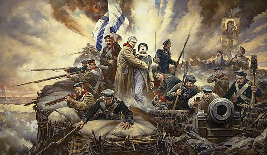

Fatherland is a 1992 alternative history detective novel by English writer and journalist Robert Harris. Set in a
universe in which Nazi Germany won World War II, the story's protagonist is an officer of the Kripo, the criminal
police, who is investigating the murder of a Nazi government official who participated at the Wannsee Conference. A
plot is thus discovered to eliminate all of those who attended the conference to help improve German relations with
the United States.The novel subverts some of the conventions of the detective novel. It begins with a murder and
diligent police detective investigating and eventually solving it. However, since the murderer is highly placed in a
tyrannical regime, solving the mystery does not result in the detective pursuing and arresting the murderer. The
contrary occurs in the novel: the murderer pursuing and arresting the detective.
The novel was an immediate best-seller in the UK and has sold over three million copies and been translated into 25
languages.

About
Throughout the novel, Harris gradually explains, in a fictional backstory, the developments that allowed Germany to
prevail in World War II. The author explains in the Author's notes that except for the backstories of the fictitious
characters, the narrative describes reality up to 1942, after which it is fictional.[1] A significant early point of
divergence is that Heydrich survived the assassination attempt by Czech fighters in May 1942 (he was killed in
reality) and later became head of the SS. The Nazi offensives on the Eastern Front ultimately push back the Soviet
forces, with the Case Blue operation succeeding in capturing the Caucasus and cutting the Red Army off from its
petroleum reserves by 1943.[5] The Nazis also found that the Enigma machine code had been broken.
A massive U-boat campaign against Britain then succeeded in starving the British into surrender by 1944.[5]
In the novel, King George VI, the British royal family and the Prime Minister Winston Churchill fled into exile
in Canada.[5] Edward VIII regained the British throne soon afterwards, with Wallis Simpson as his
queen.[7][6][5] The US defeated Japan in 1945 and used nuclear weapons, as in real life.[5] Germany tested its
first atomic bomb in 1946 and fired a non-nuclear "V-3" missile above New York City to demonstrate its ability to
attack the Continental United States with long-range missiles.[5] Thus, after a peace treaty in 1946, the US and
Germany are the novel's two superpower opponents in the Cold War.[note 3][5]
There is a reference to a brutal regime having power in China but no reference to either its ideology or whether it
is headed by Mao Zedong or somebody else. Tibet remains independent.